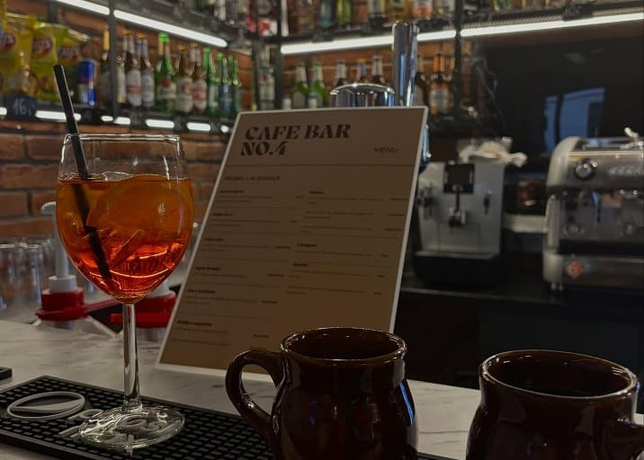

Najlepszy sport, zimne piwo, karty i stos planszówek na Głowackiego 4.
Szukasz miejsca, gdzie na piwo w Krakowie można wyjść ze znajomymi i czuć się jak u siebie? Cafe Bar No4 to Twój punkt obowiązkowy.
Pytasz gdzie pograć w planszówki? Mamy szafę pełną tytułów. A gdy gra Twoja drużyna, nasze ekrany są do Twojej dyspozycji.
Zgłodniejesz? Nie ma problemu - oryginalne zapiekanki ze Skawiny zaspokoją Twój apetyt.
Szukasz miejsca w Krakowie żeby zorganizować imprezę okolicznościową? Jesteśmy do Twojej dyspozycji.

Codziennie 12:00 - 16:00
Idealny czas na start wieczoru z meczem i znajomymi.
"Super klimat i bardzo miła obsługa. Super miejsce żeby wyjść ze znajomymi pograć w planszówki lub obejrzeć mecz."
- Damian (Google)"Świetna atmosfera, dobre piwo i ogromny wybór gier planszowych."
- Maciek (Google)